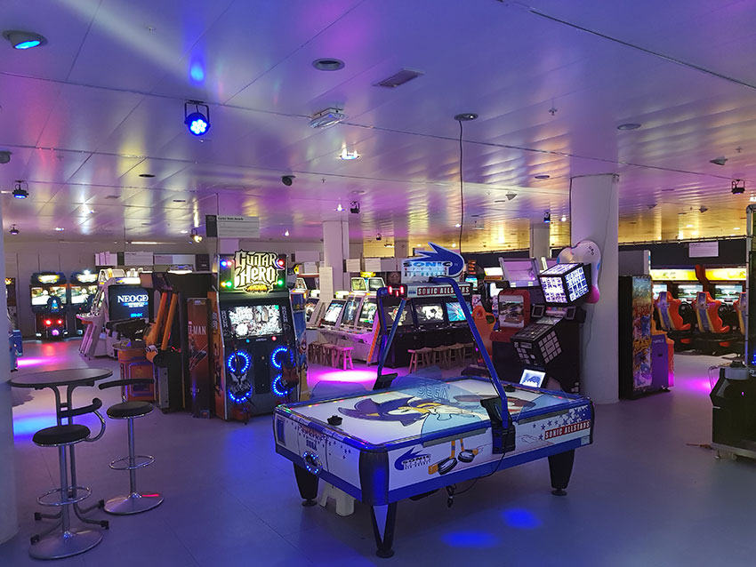

Nationaal videogame museum
Het Nationaal Videogame Museum is 'the place to be' voor iedereen die meer wil weten (én beleven) over de geschiedenis, maatschappelijke en culturele kant van videogames. Het museum laat haar bezoekers ook de games van morgen ervaren. Gamers van jong tot oud zijn welkom om te spelen, ontdekken, leren en ervaringen online te delen.
Het Nationaal Videogame Museum is 'the place to be' voor iedereen die meer wil weten (én beleven) over de geschiedenis, maatschappelijke en culturele kant van videogames. Het museum laat haar bezoekers ook de games van morgen ervaren. Gamers van jong tot oud zijn welkom om te spelen, ontdekken, leren en ervaringen online te delen.
Overzicht
Het museum is gevestigd in het midden van de passage van Stadshart Zoetermeer, op de eerste verdieping bovenaan de roltrap

Geschiedenis
Zodra je binnenkomt in het museum, word je overgoten door alles wat de game cultuur zo mooi en indrukwekkend maakt. Volg onze tijdlijn door de sfeerkamers en ontdek de geschiedenis van videogames aan de hand van de gamechangers, hoogtepunten en belangrijke momenten in techniek, artwork en cultuur binnen de game industrie.
Barcade
Welkom in onze Barcade, waar moderne horeca en retro arcadekasten samenkomen in een gezellige omgeving. Hier kun je even bijtanken na uren avonturieren, uitdagingen en de wereld redden. Naast de bekende halal hotdogs en tosti's bieden we nu ook gezonde broodjes.
Openingstijden
Zodra je binnenkomt in het museum, word je overgoten door alles wat de game cultuur zo mooi en indrukwekkend maakt. Volg onze tijdlijn door de sfeerkamers en ontdek de geschiedenis van videogames aan de hand van de gamechangers, hoogtepunten en belangrijke momenten in techniek, artwork en cultuur binnen de game industrie.
Contact:
reviews
Game